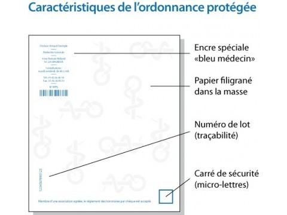
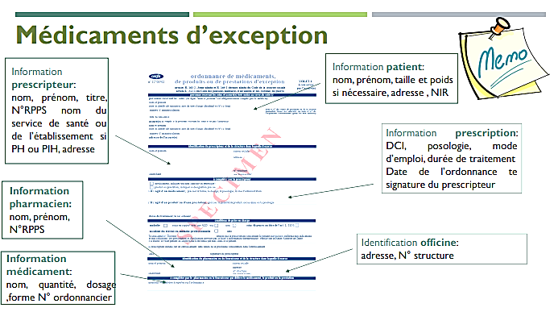

Les Médicaments à Status Particulier
Table of Contents
1. Stupéfiants
Une prescription de stupéfiant doit contenir la dose et la posologie. Le patient à 72 heures pour recevoir une dispensation complète de son traitement1.
Le pharmacien doit les stocker dans une armoire fermée à clef différente de celle des stupéfiants détenus à l'officine
Le transport à l'étranger pour un patient doit se faire par une autorisation de transport de l'ARS locale au médecin prescripteur.
La morphine injectable peut être prescripte pour 7 jours maximum.
La délivrance de FENTANYL adm: patch, buccale, ou nasale pour les douleurs chroniques doit être fractionnée sauf mention expresse du prescripteur
La Méthadone peut être prescrite jusqu'à 28 jours, et délivrée par fractions de 7 jours sauf mention expresse du prescripteur.
1.1. Ordonnance
- Sécurisée
- Doit afficher en toutes lettres:
- le nombre d'unité par prise
- Nombre de prise
- dosage

1.2. Délivrance
| DCI | Fractionnement | Exemples |
|---|---|---|
| Fentanyl transdermique | 14 j | Durogesic, Matrifen |
| Fentanyl transmuqueuse | 7 j | Actiq, Effentora, Abstral, Instanyl, Pecfent |
| Methadone | 7 j |
1.3. Mentions à Apposer
- Tampon de l'officine
- N° enregistrement sur l'ordonnancier
- Date de délivrance
- Nom de la spécialité délivrée
- Quantité délivrée en unité de prise
1.4. Comptabilité et Traçabilité
- Comptabilité journalière
- Balance mensuelle
- Inventaire annuel du stock
- Conservation des ordonnances pendant 10 ans
2. Assimilés Stupéfiants
3. Anxiolytiques et Hypnotiques
3.1. Première délivrance
Elle se fait uniquement sur une ordonnance datant de moins de 3 mois.
3.2. Prescription et Règles de Délivrance
| Hypnotiques | 4 semaines |
| Anxiolytiques | 12 semaines |
Il est interdit de renouveller de manière exceptionnelle un anxiolytique ou hypnotique
4. Médicaments d'Exception
Ce sont des spécialités remboursées uniquement pour certaines indications. Leur prescription se fait alors sur une ordonnance 4 volets4.
